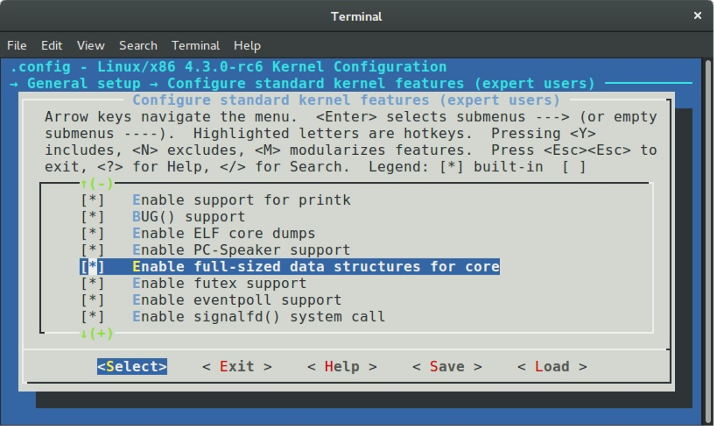

Timers and time management in the Linux kernel. Part 4.
Timers
This is fourth part of the chapter which describes timers and time management related stuff in the Linux kernel and in the previous part we knew about the tick broadcast framework and NO_HZ mode in the Linux kernel. We will continue to dive into the time management related stuff in the Linux kernel in this part and will be acquainted with yet another concept in the Linux kernel - timers. Before we will look at timers in the Linux kernel, we have to learn some theory about this concept. Note that we will consider software timers in this part.
The Linux kernel provides a software timer concept to allow to kernel functions could be invoked at future moment. Timers are widely used in the Linux kernel. For example, look in the net/netfilter/ipset/ip_set_list_set.c source code file. This source code file provides implementation of the framework for the managing of groups of IP addresses.
We can find the list_set structure that contains gc filed in this source code file:
struct list_set {
...
struct timer_list gc;
...
};
Not that the gc filed has timer_list type. This structure defined in the include/linux/timer.h header file and main point of this structure is to store dynamic timers in the Linux kernel. Actually, the Linux kernel provides two types of timers called dynamic timers and interval timers. First type of timers is used by the kernel, and the second can be used by user mode. The timer_list structure contains actual dynamic timers. The list_set contains gc timer in our example represents timer for garbage collection. This timer will be initialized in the list_set_gc_init function:
static void
list_set_gc_init(struct ip_set *set, void (*gc)(unsigned long ul_set))
{
struct list_set *map = set->data;
...
...
...
map->gc.function = gc;
map->gc.expires = jiffies + IPSET_GC_PERIOD(set->timeout) * HZ;
...
...
...
}
A function that is pointed by the gc pointer, will be called after timeout which is equal to the map->gc.expires.
Ok, we will not dive into this example with the netfilter, because this chapter is not about network related stuff. But we saw that timers are widely used in the Linux kernel and learned that they represent concept which allows to functions to be called in future.
Now let's continue to research source code of Linux kernel which is related to the timers and time management stuff as we did it in all previous chapters.
Introduction to dynamic timers in the Linux kernel
As I already wrote, we knew about the tick broadcast framework and NO_HZ mode in the previous part. They will be initialized in the init/main.c source code file by the call of the tick_init function. If we will look at this source code file, we will see that the next time management related function is:
init_timers();
This function defined in the kernel/time/timer.c source code file and contains calls of four functions:
void __init init_timers(void)
{
init_timer_cpus();
init_timer_stats();
timer_register_cpu_notifier();
open_softirq(TIMER_SOFTIRQ, run_timer_softirq);
}
Let's look on implementation of each function. The first function is init_timer_cpus defined in the same source code file and just calls the init_timer_cpu function for each possible processor in the system:
static void __init init_timer_cpus(void)
{
int cpu;
for_each_possible_cpu(cpu)
init_timer_cpu(cpu);
}
If you do not know or do not remember what is it a possible cpu, you can read the special part of this book which describes cpumask concept in the Linux kernel. In short words, a possible processor is a processor which can be plugged in anytime during the life of the system.
The init_timer_cpu function does main work for us, namely it executes initialization of the tvec_base structure for each processor. This structure defined in the kernel/time/timer.c source code file and stores data related to a dynamic timer for a certain processor. Let's look on the definition of this structure:
struct tvec_base {
spinlock_t lock;
struct timer_list *running_timer;
unsigned long timer_jiffies;
unsigned long next_timer;
unsigned long active_timers;
unsigned long all_timers;
int cpu;
bool migration_enabled;
bool nohz_active;
struct tvec_root tv1;
struct tvec tv2;
struct tvec tv3;
struct tvec tv4;
struct tvec tv5;
} ____cacheline_aligned;
The thec_base structure contains following fields: The lock for tvec_base protection, the next running_timer field points to the currently running timer for the certain processor, the timer_jiffies fields represents the earliest expiration time (it will be used by the Linux kernel to find already expired timers). The next field - next_timer contains the next pending timer for a next timer interrupt in a case when a processor goes to sleep and the NO_HZ mode is enabled in the Linux kernel. The active_timers field provides accounting of non-deferrable timers or in other words all timers that will not be stopped during a processor will go to sleep. The all_timers field tracks total number of timers or active_timers + deferrable timers. The cpu field represents number of a processor which owns timers. The migration_enabled and nohz_active fields are represent opportunity of timers migration to another processor and status of the NO_HZ mode respectively.
The last five fields of the tvec_base structure represent lists of dynamic timers. The first tv1 field has:
#define TVR_SIZE (1 << TVR_BITS)
#define TVR_BITS (CONFIG_BASE_SMALL ? 6 : 8)
...
...
...
struct tvec_root {
struct hlist_head vec[TVR_SIZE];
};
type. Note that the value of the TVR_SIZE depends on the CONFIG_BASE_SMALL kernel configuration option:

that reduces size of the kernel data structures if disabled. The v1 is array that may contain 64 or 256 elements where an each element represents a dynamic timer that will decay within the next 255 system timer interrupts. Next three fields: tv2, tv3 and tv4 are lists with dynamic timers too, but they store dynamic timers which will decay the next 2^14 - 1, 2^20 - 1 and 2^26 respectively. The last tv5 field represents list which stores dynamic timers with a large expiring period.
So, now we saw the tvec_base structure and description of its fields and we can look on the implementation of the init_timer_cpu function. As I already wrote, this function defined in the kernel/time/timer.c source code file and executes initialization of the tvec_bases:
static void __init init_timer_cpu(int cpu)
{
struct tvec_base *base = per_cpu_ptr(&tvec_bases, cpu);
base->cpu = cpu;
spin_lock_init(&base->lock);
base->timer_jiffies = jiffies;
base->next_timer = base->timer_jiffies;
}
The tvec_bases represents per-cpu variable which represents main data structure for a dynamic timer for a given processor. This per-cpu variable defined in the same source code file:
static DEFINE_PER_CPU(struct tvec_base, tvec_bases);
First of all we're getting the address of the tvec_bases for the given processor to base variable and as we got it, we are starting to initialize some of the tvec_base fields in the init_timer_cpu function. After initialization of the per-cpu dynamic timers with the jiffies and the number of a possible processor, we need to initialize a tstats_lookup_lock spinlock in the init_timer_stats function:
void __init init_timer_stats(void)
{
int cpu;
for_each_possible_cpu(cpu)
raw_spin_lock_init(&per_cpu(tstats_lookup_lock, cpu));
}
The tstats_lookcup_lock variable represents per-cpu raw spinlock:
static DEFINE_PER_CPU(raw_spinlock_t, tstats_lookup_lock);
which will be used for protection of operation with statistics of timers that can be accessed through the procfs:
static int __init init_tstats_procfs(void)
{
struct proc_dir_entry *pe;
pe = proc_create("timer_stats", 0644, NULL, &tstats_fops);
if (!pe)
return -ENOMEM;
return 0;
}
For example:
$ cat /proc/timer_stats
Timerstats sample period: 3.888770 s
12, 0 swapper hrtimer_stop_sched_tick (hrtimer_sched_tick)
15, 1 swapper hcd_submit_urb (rh_timer_func)
4, 959 kedac schedule_timeout (process_timeout)
1, 0 swapper page_writeback_init (wb_timer_fn)
28, 0 swapper hrtimer_stop_sched_tick (hrtimer_sched_tick)
22, 2948 IRQ 4 tty_flip_buffer_push (delayed_work_timer_fn)
...
...
...
The next step after initialization of the tstats_lookup_lock spinlock is the call of the timer_register_cpu_notifier function. This function depends on the CONFIG_HOTPLUG_CPU kernel configuration option which enables support for hotplug processors in the Linux kernel.
When a processor will be logically offlined, a notification will be sent to the Linux kernel with the CPU_DEAD or the CPU_DEAD_FROZEN event by the call of the cpu_notifier macro:
#ifdef CONFIG_HOTPLUG_CPU
...
...
static inline void timer_register_cpu_notifier(void)
{
cpu_notifier(timer_cpu_notify, 0);
}
...
...
#else
...
...
static inline void timer_register_cpu_notifier(void) { }
...
...
#endif /* CONFIG_HOTPLUG_CPU */
In this case the timer_cpu_notify will be called which checks an event type and will call the migrate_timers function:
static int timer_cpu_notify(struct notifier_block *self,
unsigned long action, void *hcpu)
{
switch (action) {
case CPU_DEAD:
case CPU_DEAD_FROZEN:
migrate_timers((long)hcpu);
break;
default:
break;
}
return NOTIFY_OK;
}
This chapter will not describe hotplug related events in the Linux kernel source code, but if you are interesting in such things, you can find implementation of the migrate_timers function in the kernel/time/timer.c source code file.
The last step in the init_timers function is the call of the:
open_softirq(TIMER_SOFTIRQ, run_timer_softirq);
function. The open_softirq function may be already familiar to you if you have read the ninth part about the interrupts and interrupt handling in the Linux kernel. In short words, the open_softirq function defined in the kernel/softirq.c source code file and executes initialization of the deferred interrupt handler.
In our case the deferred function is the run_timer_softirq function that is will be called after a hardware interrupt in the do_IRQ function which defined in the arch/x86/kernel/irq.c source code file. The main point of this function is to handle a software dynamic timer. The Linux kernel does not do this thing during the hardware timer interrupt handling because this is time consuming operation.
Let's look on the implementation of the run_timer_softirq function:
static void run_timer_softirq(struct softirq_action *h)
{
struct tvec_base *base = this_cpu_ptr(&tvec_bases);
if (time_after_eq(jiffies, base->timer_jiffies))
__run_timers(base);
}
At the beginning of the run_timer_softirq function we get a dynamic timer for a current processor and compares the current value of the jiffies with the value of the timer_jiffies for the current structure by the call of the time_after_eq macro which is defined in the include/linux/jiffies.h header file:
#define time_after_eq(a,b) \
(typecheck(unsigned long, a) && \
typecheck(unsigned long, b) && \
((long)((a) - (b)) >= 0))
Reclaim that the timer_jiffies field of the tvec_base structure represents the relative time when functions delayed by the given timer will be executed. So we compare these two values and if the current time represented by the jiffies is greater than base->timer_jiffies, we call the __run_timers function that defined in the same source code file. Let's look on the implementation of this function.
As I just wrote, the __run_timers function runs all expired timers for a given processor. This function starts from the acquiring of the tvec_base's lock to protect the tvec_base structure
static inline void __run_timers(struct tvec_base *base)
{
struct timer_list *timer;
spin_lock_irq(&base->lock);
...
...
...
spin_unlock_irq(&base->lock);
}
After this it starts the loop while the timer_jiffies will not be greater than the jiffies:
while (time_after_eq(jiffies, base->timer_jiffies)) {
...
...
...
}
We can find many different manipulations in the our loop, but the main point is to find expired timers and call delayed functions. First of all we need to calculate the index of the base->tv1 list that stores the next timer to be handled with the following expression:
index = base->timer_jiffies & TVR_MASK;
where the TVR_MASK is a mask for the getting of the tvec_root->vec elements. As we got the index with the next timer which must be handled we check its value. If the index is zero, we go through all lists in our cascade table tv2, tv3 and etc., and rehashing it with the call of the cascade function:
if (!index &&
(!cascade(base, &base->tv2, INDEX(0))) &&
(!cascade(base, &base->tv3, INDEX(1))) &&
!cascade(base, &base->tv4, INDEX(2)))
cascade(base, &base->tv5, INDEX(3));
After this we increase the value of the base->timer_jiffies:
++base->timer_jiffies;
In the last step we are executing a corresponding function for each timer from the list in a following loop:
hlist_move_list(base->tv1.vec + index, head);
while (!hlist_empty(head)) {
...
...
...
timer = hlist_entry(head->first, struct timer_list, entry);
fn = timer->function;
data = timer->data;
spin_unlock(&base->lock);
call_timer_fn(timer, fn, data);
spin_lock(&base->lock);
...
...
...
}
where the call_timer_fn just call the given function:
static void call_timer_fn(struct timer_list *timer, void (*fn)(unsigned long),
unsigned long data)
{
...
...
...
fn(data);
...
...
...
}
That's all. The Linux kernel has infrastructure for dynamic timers from this moment. We will not dive into this interesting theme. As I already wrote the timers is a widely used concept in the Linux kernel and nor one part, nor two parts will not cover understanding of such things how it implemented and how it works. But now we know about this concept, why does the Linux kernel needs in it and some data structures around it.
Now let's look usage of dynamic timers in the Linux kernel.
Usage of dynamic timers
As you already can noted, if the Linux kernel provides a concept, it also provides API for managing of this concept and the dynamic timers concept is not exception here. To use a timer in the Linux kernel code, we must define a variable with a timer_list type. We can initialize our timer_list structure in two ways. The first is to use the init_timer macro that defined in the include/linux/timer.h header file:
#define init_timer(timer) \
__init_timer((timer), 0)
#define __init_timer(_timer, _flags) \
init_timer_key((_timer), (_flags), NULL, NULL)
where the init_timer_key function just calls the:
do_init_timer(timer, flags, name, key);
function which fields the given timer with default values. The second way is to use the:
#define TIMER_INITIALIZER(_function, _expires, _data) \
__TIMER_INITIALIZER((_function), (_expires), (_data), 0)
macro which will initialize the given timer_list structure too.
After a dynamic timer is initialized we can start this timer with the call of the:
void add_timer(struct timer_list * timer);
function and stop it with the:
int del_timer(struct timer_list * timer);
function.
That's all.
Conclusion
This is the end of the fourth part of the chapter that describes timers and timer management related stuff in the Linux kernel. In the previous part we got acquainted with the two new concepts: the tick broadcast framework and the NO_HZ mode. In this part we continued to dive into time management related stuff and got acquainted with the new concept - dynamic timer or software timer. We didn't saw implementation of a dynamic timers management code in details in this part but saw data structures and API around this concept.
In the next part we will continue to dive into timer management related things in the Linux kernel and will see new concept for us - timers.
If you have questions or suggestions, feel free to ping me in twitter 0xAX, drop me email or just create issue.
Please note that English is not my first language and I am really sorry for any inconvenience. If you found any mistakes please send me PR to linux-insides.